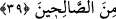

karşılığını verirsin. Namazda söylenen “Allah, kendine hamdedenin hamdini işitir”
sözüne benzer. Yani işitmek kabul etmek mânasınadır. Çünkü kabul etmeyen onu
işitmemiş gibidir.
“Zekeriya, Meryem’in hâlini görmeden de Allah’ın kudretiyle her şeyin mümkün
olduğunu biliyordu. Niçin bundan önce isteyeceğini istemedi?” denilecek olursa deriz
ki: “İnsan bazı durumlarda görmeden önce bilse bile bir şeyi görünce onu daha çok
ister.”
39. Zekeriya mâbedde durmuş namaz kılarken melekler ona şöyle nidâ ettiler:
Allah sana, kendisi tarafından gelen bir Kelime’yi tasdik edici, efendi, iffetli ve
sâlihlerden bir peygamber olarak Yahya’yı müjdeler.
“Melekler ona şöyle nidâ etti.” Yani Cibrîl ona seslendi. Aynı cinsten olan biri
hükmen o cinsin tamamına nisbet olunur. Meselâ “filan kimse ata biniyor” denilse, (at
ismi o cinsin hepsine verilmekle beraber) o kimsenin bu atlardan birine bindiği
anlaşılır. Cibrîl, meleklerin başı olduğu için onun şânını ta’zîm için ondan çoğul olarak
“melekler” diye bahsedilmiştir.
“O, (yani Zekeriya) mihrabda durup namaz kılarken” O anda Zekeriya’nın
durumunu anlatmaktadır. O da o zaman mihrabda yahud Meryem’in odasında namaz
kılmaktadır.
“Allah sana…. Yahya’yı müjdelemektedir.” Yani Allah sana ismi Yahya olan bir
erkek çocuk müjdelemektedir. Çünkü annesinin rahimi onunla hayat bulmuştur. Yine
meclisler onun öğütleriyle hayat bulacaktır. Bu cümle; “adı Yahya olan bir çocuğun
doğumu” takdîrindedir. Çünkü müjdeleme, yani müjdelemek ayn’lara, yani bir şeyin
veya bir kimsenin kendisine aid olmaz.
“Kendisinden kelimeyi tasdik edici olarak.” Yani Îsâ (a.s.)’ı tasdik edici olarak.
Îsâ (a.s.)’ın “kelime” diye tanımlanmasının sebebi, “kün”, kelimesindeki “ol”
emriyle babasız dünyaya geldiği içindir. Böylece Îsâ, âlem-i emr olan bedîıyyâta
benzedi. Yani, doğrudan kudret-i ilâhiyeden var oldu. Yahya, Îsâ’ya ilk inanan; Onun,
Allah’ın kelimesi ve ruhu olduğunu ilk tasdik edendir. Îsâ (a.s.)’ın “Ruh” diye
isimlendirilmesinin sebebi; Allah’ın insana ruh ile hayat vermesi gibi, Îsâ vâsıtasıyla
dalâletten kurtarıp imânî hayat vermesidir.
Süddî şöyle demiştir: Yahya’nın annesi, Îsâ’nın annesiyle karşılaştı. Dedi ki: “Ey
Meryem, benim hâmile olduğumu biliyor musun?” Meryem dedi ki: “Ben de
hâmileyim.” Yahya’nın annesi dedi ki: “Benim karnımdakinin senin karnındakine secde